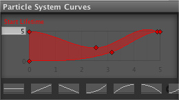
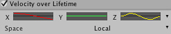
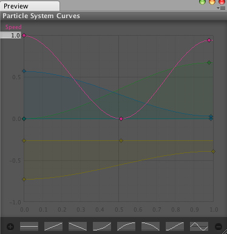

Particle System Curve Editor
MinMax curves
Many of the properties in the particle system modules describe a change of a value with time. That change is described via MinMax Curves. These time-animated properties (for example size and speed), will have a pull down menu on the right hand side, where you can choose between:

Constant: The value of the property will not change with time, and will not be displayed in the Curve Editor
Curve: The value of the property will change with time based on the curve specified in the Curve Editor

A property animated with a Curve
Random between constants: The value of the property will be selected at random between the two constants
Random between curves: A curve will be generated at random between the min and the max curve, and the value of the property will change in time based on the generated curve

A property animated as Random Between Two Curves
In the Curve Editor, the x-axis spans time between 0 and the value specified by the Duration property, and the y-axis represents the value of the animated property at each point in time. The range of the y-axis can be adjusted in the number field in the upper right corner of the Curve Editor. The Curve Editor currently displays all of the curves for a particle system in the same window.

Multiple curves in the same curve editor
Note that the "-" in the bottom-right corner will remove the currently selected curve, while the "+" will optimize it (that is make it into a parametrized curve with at most 3 keys).
For animating properties that describe vectors in 3D space, we use the TripleMinMax Curves, which are simply curves for the x-,y-, and z- dimensions side by side, and it looks like this:

Managing many curves in the curve editor
To avoid cluttering in the Curve Editor, it is possible to toggle curves on and off, by clicking on them in the inspector. The Particle System Curve Editor can also be detached from the Inspector by right-clicking on the Particle System Curves title bar, after which you should see something like this:

A detached Curve Editor that can be docked like any other window
For more information on working with curves, take a look at the Curve Editor documentation
Page last updated: 2013-01-09